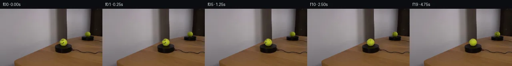

![首帧]()

Round 00
2026-11-05T13:13:02.928059+00:00像素候选变化代码 +336/−0inspection 更新
pixels 7ffad9add8185dbc · code b8663a29f9b6ef43
查看本轮 generate.py 真实 diff
--- previous/generate.py
+++ current/generate.py
@@ -0,0 +1,336 @@
+"""Deterministic local pixel continuation of the supplied tennis-ball scene.
+
+The scene is a photographic plate. Only the two existing spherical surfaces
+change. A shared rigid yaw transports measured felt/ink/seam detail between
+analytic front and mirror surface projections. No external assets or models.
+"""
+from pathlib import Path
+import json
+import math
+import numpy as np
+from PIL import Image, ImageDraw
+from scipy.ndimage import map_coordinates
+from artifact_io import save
+
+ROOT = Path(__file__).resolve().parent
+COUNT, HEIGHT, WIDTH, FPS = 20, 144, 256, 4
+ELEVATION = 0.15
+STEP_DEGREES = 8.0
+SOURCE = np.asarray(Image.open(ROOT / 'first_frame.png').convert('RGB'), dtype=np.float64)
+Y, X = np.mgrid[:HEIGHT, :WIDTH]
+CE, SE = math.cos(ELEVATION), math.sin(ELEVATION)
+
+
+def smoothstep(low, high, x):
+ v = np.clip((x - low) / (high - low), 0.0, 1.0)
+ return v * v * (3.0 - 2.0 * v)
+
+
+def illumination_basis(u, v, w):
+ return np.stack((np.ones_like(u), u, v, w, u*v, u*u, v*v, u*w, v*w), axis=-1)
+
+
+def photo_view(name, center, radii, reflected=False):
+ cx, cy = center
+ rx, ry = radii
+ u, v = (X-cx)/rx, -(Y-cy)/ry
+ q = u*u + v*v
+ w = np.sqrt(np.maximum(0, 1-q))
+ basis = illumination_basis(u, v, w)
+ ink_region = np.zeros((HEIGHT, WIDTH), dtype=bool)
+ if not reflected:
+ ink_region = (
+ ((X-152.4)**2/1.9**2 + (Y-79.4)**2/2.1**2 < 1)
+ | ((X-156.9)**2/1.6**2 + (Y-79.2)**2/2.4**2 < 1)
+ | ((X >= 149) & (X <= 159) & (Y >= 83) & (Y <= 88))
+ )
+ # Exclude the ink and the pale seam when recovering static illumination.
+ samples = (q < 0.84) & ~ink_region & (SOURCE[:,:,2] < .30*np.maximum(SOURCE[:,:,1], 1))
+ a, rgb = basis[samples], SOURCE[samples]
+ coefficients = np.linalg.lstsq(a, rgb, rcond=None)[0]
+ for _ in range(6):
+ errors = a @ coefficients - rgb
+ distance = np.sqrt(np.sum(errors[:,:2]**2, axis=1))
+ weights = np.minimum(1., 5./np.maximum(distance, 1e-8))
+ coefficients = np.linalg.lstsq(a*weights[:,None], rgb*weights[:,None], rcond=None)[0]
+ shade = basis @ coefficients
+ # The green illumination channel sets exposure for all color detail. This
+ # permits the same pale seam and dark ink to survive in the dimmer mirror.
+ detail = (SOURCE-shade)/np.maximum(shade[:,:,1:2], 20.)
+ detail = np.clip(detail, -.90, .65)
+ detail[q > 1] = 0
+ ink = np.maximum(-detail[:,:,1], 0) * ink_region
+ if reflected:
+ normals = np.stack((u, v*CE+w*SE, v*SE-w*CE), axis=-1)
+ else:
+ normals = np.stack((u, v*CE+w*SE, -v*SE+w*CE), axis=-1)
+ # Preserve the original outline; only partially cover its antialiased rim.
+ coverage = 1-smoothstep(.945, 1.0, np.sqrt(q))
+ coverage[q >= 1] = 0
+ return dict(name=name, center=center, radii=radii, reflected=reflected,
+ q=q, shade=shade, detail=detail, ink=ink, normals=normals,
+ mask=q<1, coverage=coverage,
+ fit_samples=int(samples.sum()),
+ fit_median_error=np.median(np.abs(shade[samples]-rgb), axis=0).tolist())
+
+
+FRONT = photo_view('direct', (158.25, 84.10), (9.55, 9.50))
+MIRROR = photo_view('mirror', (219.05, 63.55), (6.50, 6.35), reflected=True)
+VIEWS = (FRONT, MIRROR)
+
+
+def curve_basis(n):
+ x, y, z = n[...,0], n[...,1], n[...,2]
+ return np.stack((np.ones_like(x), x, y, z, x*y, x*z, y*z, x*x-y*y, z*z-y*y), axis=-1)
+
+
+def fit_seam():
… diff truncated; 249 more lines …